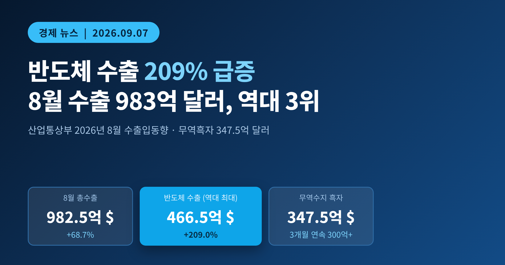
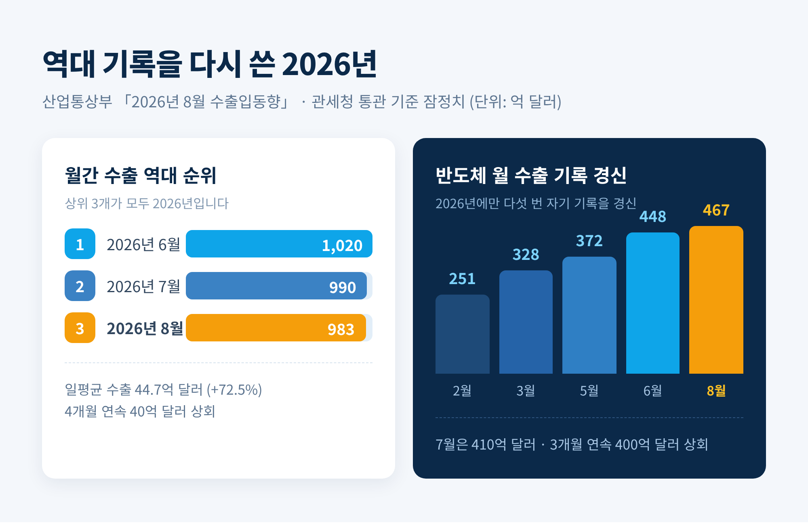
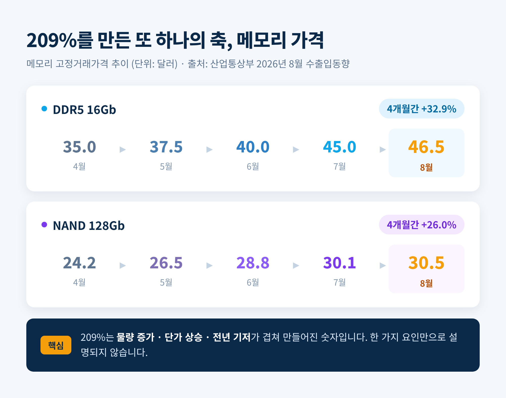
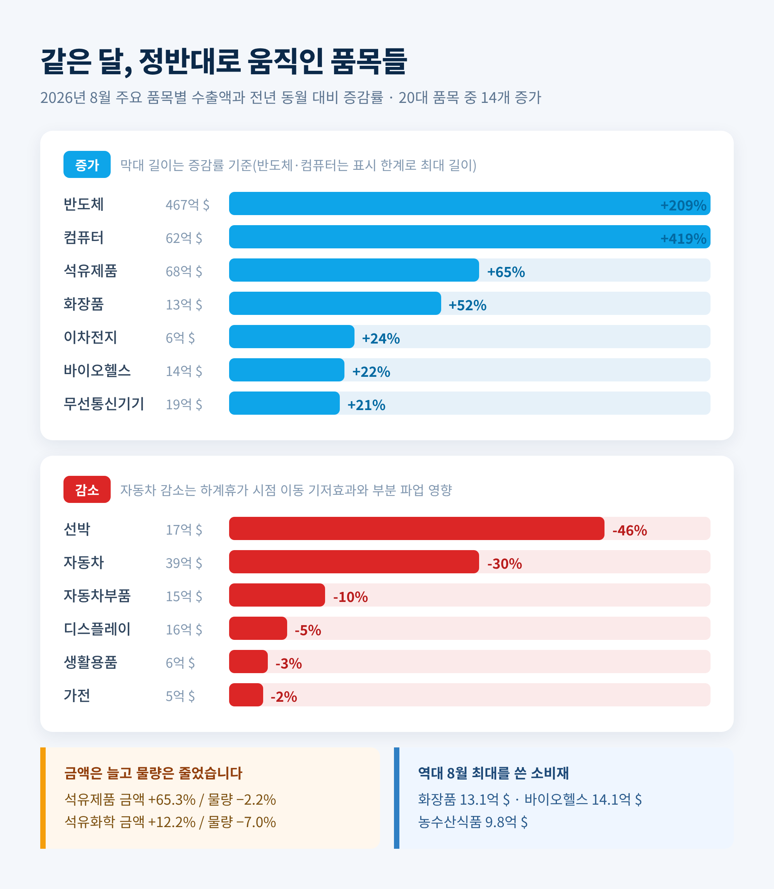
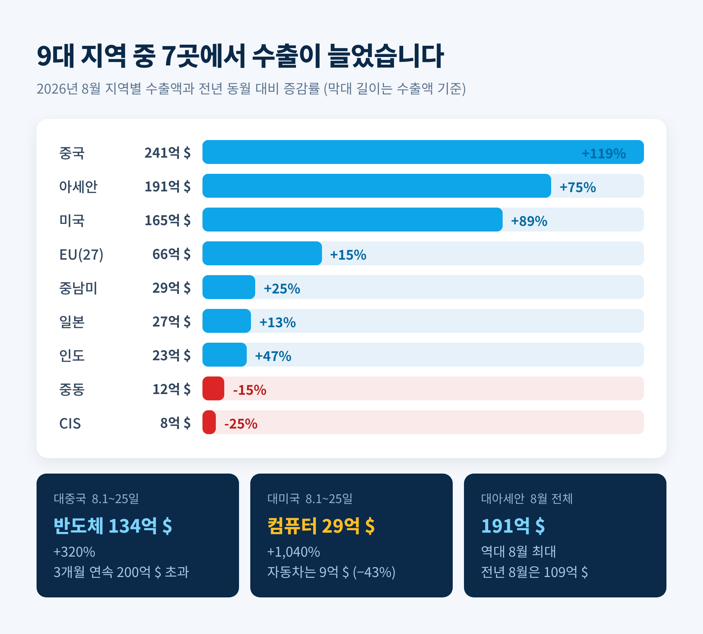
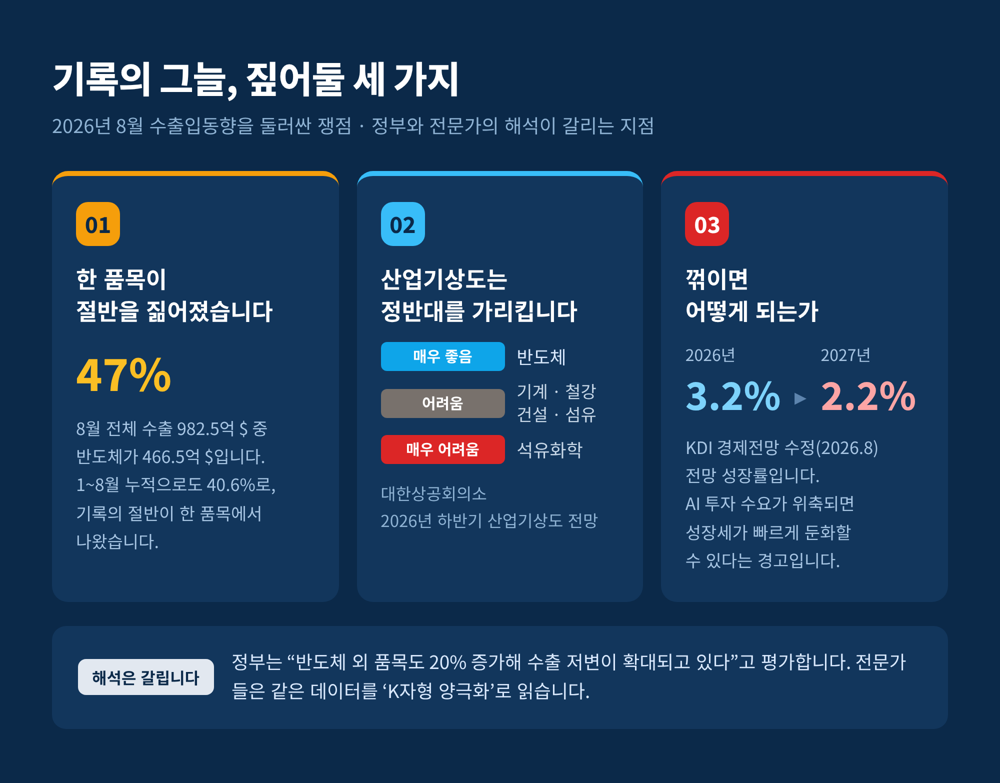

산업통상부 「2026년 8월 수출입동향」 · 무역흑자 347.5억 달러와 반도체 비중 47%가 함께 남긴 질문
이번 글에서는 산업통상부가 9월 1일 발표한 「2026년 8월 수출입동향」을 찬찬히 읽어보겠습니다. 숫자 하나가 유난히 튀는 달이었습니다. 반도체 수출이 전년 같은 달보다 209% 늘었습니다.
세 줄 요약
① 8월 수출 982.5억 달러(+68.7%), 무역흑자 347.5억 달러. 수출은 역대 3위, 흑자는 3개월 연속 300억 달러 상회.
② 반도체 수출 466.5억 달러(+209.0%)로 월 기준 역대 최대. 전체 수출의 약 47%를 한 품목이 차지했습니다.
③ 연간 1조 달러 달성이 12월 초로 전망되는 한편, 자동차·선박·석유화학은 뒷걸음쳤습니다.

지난 8월 우리나라 수출은 982억 5천만 달러를 기록했습니다. 1년 전 같은 달보다 68.7% 늘어난 규모입니다.
수입은 635억 1천만 달러로 22.5% 증가했습니다. 그 차이인 347억 5천만 달러가 무역수지 흑자로 남았습니다. 흑자는 석 달 연속 300억 달러를 넘겼습니다.
월간 수출 역대 순위를 보면 그림이 더 선명해집니다.
상위 세 자리가 모두 올해입니다. 8월은 그중 세 번째였을 뿐인데도 역대 3위입니다.
조업일수를 감안한 일평균 수출은 44억 7천만 달러로 72.5% 늘었습니다. 넉 달 연속 40억 달러를 웃돌았습니다. 이 지표가 중요합니다. 달력상 영업일이 며칠 더 있었던 덕분이 아니라는 뜻이기 때문입니다.

8월 반도체 수출은 466억 5천만 달러였습니다. 전년 동월 대비 209.0% 증가한 금액이고, 월 기준으로 역대 최대입니다. 넉 달 사이 400억 달러 선을 세 번 연속 넘겼습니다.
올해 반도체가 최고 기록을 갈아치운 흐름을 나열하면 이렇습니다. 2월 251억, 3월 328억, 5월 372억, 6월 448억, 그리고 8월 467억 달러. 한 해에 다섯 번 자기 기록을 깼습니다.
정부가 밝힌 배경은 인공지능 인프라 수요입니다. 구글과 아마존 같은 하이퍼스케일러, 그러니까 대형 데이터센터 운영사들이 설비투자를 늘리면서 메모리 반도체를 대량으로 사들이고 있습니다.
여기에 가격이 붙었습니다. DDR5 16Gb 고정거래가격은 4월 35.0달러에서 8월 46.5달러로 올랐습니다. NAND 128Gb는 같은 기간 24.2달러에서 30.5달러가 됐습니다. 넉 달 만에 D램은 33%, 낸드는 26% 뛴 셈입니다.
물량이 늘었고, 단가가 올랐고, 작년 8월이 상대적으로 낮았습니다. 209%는 이 세 가지가 겹쳐 만들어진 숫자입니다. 한 가지 요인만으로 설명되지 않는다는 점은 짚어둘 필요가 있습니다.
메모리에 딸린 품목도 함께 움직였습니다. 컴퓨터 수출이 62억 4천만 달러로 419.5% 늘어 전 기간 통틀어 역대 최대를 기록했습니다. 기업용 SSD의 핵심 부품이 낸드이기 때문입니다.

20대 주력 품목 가운데 14개가 증가했습니다. 숫자만 보면 고른 성장처럼 읽힙니다. 그런데 하나씩 뜯어보면 온도가 꽤 다릅니다.
늘어난 쪽 — 석유제품 68억 달러(+65.3%), 화장품 13억 달러(+52.1%), 이차전지 6억 달러(+24.0%), 바이오헬스 14억 달러(+22.3%), 무선통신기기 19억 달러(+21.2%). 화장품과 바이오헬스, 농수산식품은 역대 8월 중 최대였습니다.
줄어든 쪽 — 자동차 38억 5천만 달러(△29.8%), 선박 16억 9천만 달러(△45.9%), 자동차부품 15억 달러(△10%), 디스플레이 16억 달러(△5%).
자동차 감소는 조금 조심해서 읽어야 합니다. 완성차 업체의 하계휴가 시점이 작년 7월 말에서 올해 8월 초로 옮겨간 기저효과, 그리고 부분 파업에 따른 생산 차질이 겹쳤습니다. 구조적 붕괴로 단정할 사안은 아닙니다.
석유제품과 석유화학은 조금 다른 결입니다. 금액은 각각 65.3%, 12.2% 늘었습니다. 다만 물량은 각각 2.2%, 7.0% 줄었습니다. 두바이유가 배럴당 88.8달러로 27.9% 오르면서 단가가 밀어올린 증가였습니다. 금액이 커졌다고 사정이 나아진 것은 아닙니다.
철강은 21억 달러로 7.9% 늘었습니다만, 속을 보면 갈렸습니다. EU가 관세할당(TRQ)을 도입하면서 대EU 수출은 줄었고, 대신 미국의 AI 데이터센터 건설 수요가 판재류를 끌어갔습니다. 여기서도 결국 AI였습니다.

9대 주요 지역 가운데 7곳에서 수출이 늘었습니다.
| 지역 | 수출액 | 증감률 |
|---|---|---|
| 중국 | 241억 달러 | +119% |
| 아세안 | 191억 달러 | +75% |
| 미국 | 165억 달러 | +89% |
| EU | 66억 달러 | +15% |
| 중남미 | 29억 달러 | +25% |
| 일본 | 27억 달러 | +13% |
| 인도 | 23억 달러 | +47% |
| 중동 | 12억 달러 | △15% |
| CIS | 8억 달러 | △25% |
대중국 수출은 석 달 연속 200억 달러를 넘었습니다. 8월 1일부터 25일까지 중국으로 나간 반도체만 134억 달러로, 320% 늘었습니다.
대미국 수출에서는 컴퓨터가 눈에 띕니다. 같은 기간 29억 달러가 나갔는데 증가율이 1,040%입니다. 반면 자동차는 9억 달러로 43% 줄었습니다. 미국 현지 생산이 늘어난 영향도 함께 작용했습니다.
대아세안 수출 191억 달러는 역대 8월 중 최대입니다. 작년 8월이 109억 달러였으니 1년 만에 거의 두 배가 됐습니다.
한편 중동은 15% 감소했습니다. 최대 품목인 자동차가 부진했고, 일반기계와 석유화학도 함께 밀렸습니다.

9월 5일 오후 1시 기준으로 올해 누적 수출액이 7,094억 달러를 기록했습니다. 지난해 연간 수출액 7,093억 달러를 넘어선 것입니다. 117일 앞당겼습니다.
이종욱 관세청장은 이재명 대통령에게 "현재의 견조한 수출 흐름이 이어진다면 12월 초쯤 연간 수출 1조 달러 달성이 전망된다"고 보고했습니다.
연간 수출 1조 달러를 넘긴 나라는 지금까지 미국, 중국, 독일 셋뿐입니다. 한국이 도달하면 네 번째가 됩니다.
우리 수출은 2022년 6,836억 달러에서 2023년 6,322억 달러로 주춤했다가, 2024년 6,836억 달러로 되돌아왔고, 지난해 처음 7,000억 달러를 넘겼습니다. 예전에는 7,000억 달러가 목표선이었습니다. 지금은 1조 달러가 입에 오릅니다.
다만 이것은 아직 전망입니다. 남은 넉 달 동안 월평균 766억 달러가량을 유지해야 도달하는 숫자입니다. 달성했다고 말할 단계는 아닙니다.
여기서부터가 이 발표의 진짜 쟁점입니다.
8월 반도체 수출 466억 5천만 달러는 전체 수출 982억 5천만 달러의 약 47%입니다. 1월부터 8월까지 누적으로 봐도 반도체가 2,812억 달러로 전체의 40.6%를 차지했습니다.
같은 데이터를 두고 해석은 갈립니다.
김정관 산업통상부 장관은 "반도체 수출 강세가 지속되는 가운데, 반도체 외 품목의 수출도 20%의 높은 증가율을 기록하고 있어 우리 수출의 저변이 확대되고 있다"고 평가했습니다.
반면 전문가들은 'K자형 양극화'라는 표현을 씁니다. 대한상공회의소의 2026년 하반기 산업기상도에서 반도체는 '매우 좋음'이었습니다. 기계·건설·철강·섬유패션은 '어려움', 석유화학은 '매우 어려움'으로 평가됐습니다.
김태황 명지대 국제통상학과 교수는 반도체가 관세 영향에서 비켜서 있는 반면, 자동차·철강과 여수·광양·창원 등 남부 지방 산업단지 제조업은 가격 하락 부담을 안고 있다고 지적했습니다.
한국개발연구원(KDI)의 경고는 더 직접적입니다. AI 투자 수익성에 대한 우려로 글로벌 AI 투자 수요가 위축되거나, 경쟁 심화로 국내 반도체 기업의 점유율이 떨어질 경우 경제 성장세가 빠르게 둔화할 수 있다는 진단입니다. KDI는 2026년 성장률을 3.2%로 보면서, 2027년은 2.2%로 낮춰 잡았습니다.
낙수효과를 두고도 평가가 엇갈립니다. 노무라증권은 반도체 호조의 낙수효과가 아직 강하게 나타나지 않는다고 봤습니다. 반도체가 자본집약적 산업이라 매출이 늘어도 고용 창출로 곧장 이어지지 않는다는 이유입니다. 반대로 수출 호조 덕에 제조업 체감경기가 개선되고 있다는 조사도 있습니다. 어느 쪽이 맞는지는 아직 확정할 수 없습니다.

첫째, 미국의 반도체 관세입니다. 미국은 지난 1월 무역확장법 232조 포고령으로 일부 수입 반도체에 25% 관세를 매기고 있습니다. 다만 현재 이 관세는 일부 첨단 컴퓨팅 칩에 한정돼 있고, D램과 낸드 같은 메모리 전반에는 적용되지 않습니다. 적용 범위가 넓어지면 지금의 그림은 상당히 달라집니다.
둘째, 메모리 가격의 지속 여부입니다. 209%의 상당 부분은 가격이 만들었습니다. 가격 사이클이 꺾이면 금액도 함께 내려옵니다. 8월 반도체장비 수입이 25억 7천만 달러로 117.3% 늘었다는 점은 국내 기업들이 증설에 나서고 있다는 신호인데, 증설은 시차를 두고 공급 부담으로 돌아오기도 합니다.
셋째, 반도체가 만든 여력을 어디에 쓰느냐입니다. 구자현 KDI 선임연구위원은 반도체가 창출한 기회를 다른 주력 산업의 구조 고도화로 연결하는 것이 관건이라고 말했습니다. 석유화학은 구조조정을 통한 친환경 전환으로, 철강과 조선은 기술 고도화로 풀어야 한다는 제언입니다. 강성진 고려대 경제학과 교수는 잘하는 대기업을 직접 지원하기보다 전력망 같은 필수 인프라와 규제 개선에 집중하라고 조언했습니다.
세 가지 모두 8월 통계 안에 답이 들어 있지는 않습니다. 앞으로 몇 달의 숫자가 말해줄 문제입니다.
이 글에 나온 수출입 실적은 모두 관세청 통관 기준 잠정치입니다. 연간통계가 확정되는 2027년 2월까지 수정될 수 있습니다.
그리고 한 가지 더 말씀드립니다. 이 글은 공개된 통계와 보도를 정리한 해설이며, 특정 종목이나 자산에 대한 투자 권유가 아닙니다. 수출 지표가 좋다는 사실과 개별 기업의 주가가 오른다는 사실은 같은 이야기가 아닙니다. 투자 판단과 그 결과에 대한 책임은 투자자 본인에게 있습니다.
정리하면 이렇습니다.
8월 한국 수출은 역대 세 번째로 큰 달이었고, 반도체는 자기 기록을 다시 썼습니다. 무역흑자는 넉넉했고, 연간 1조 달러라는 처음 보는 숫자가 시야에 들어왔습니다. 동시에 자동차는 뒷걸음쳤고, 석유화학은 금액만 늘었으며, 중동으로 가는 배는 줄었습니다.
같은 달에 두 가지 일이 함께 벌어졌습니다.
— 기록은 한 품목이 세웠고, 부담은 나머지가 나눠 지고 있습니다.
호황이 왔을 때 무엇을 준비했는지는 호황이 끝난 뒤에야 드러납니다. 지금 우리가 보고 있는 것이 성적표인지 시험지인지 물으신다면, 저는 아직 시험지 쪽에 가깝다고 답하겠습니다.